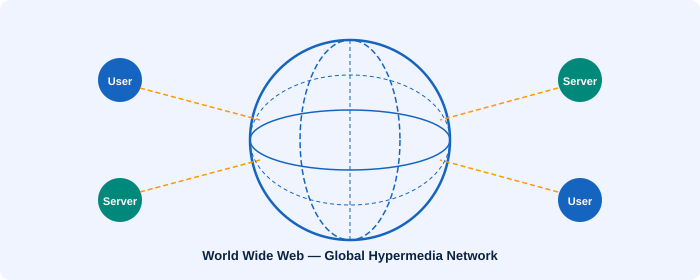

🌍 World Wide Web (WWW)
A wide-area hypermedia information retrieval system accessible globally

What is the WWW?
The World Wide Web has had a profound impact on our lives since the 1990s. It is NOT the same as the Internet — the Web is just one of the many services that run on top of the Internet infrastructure.
It was invented by Tim Berners-Lee in 1989 and made publicly available in 1991, originally as a way for scientists to share information at CERN.
Breaking Down the Definition
- Wide-area: The WWW spans the entire globe, connecting users across continents.
- Hypermedia: It contains various types of media — text, pictures, sound, movies — linked together with hyperlinks.
- Information retrieval: Viewing a WWW document (a web page) is easy using a web browser; pages can be accessed just by clicking hypertext links or entering addresses.
- Universal access: Regardless of computer type or operating system, a web browser allows seamless access to many different systems.
- Large universe of documents: Anyone can publish a web page. No matter how obscure the topic, someone has written a web page about it.
WWW vs The Internet
Key Distinction
The Internet is the global physical network of interconnected computers. The World Wide Web is a service (information system) that runs over the Internet. Other Internet services include Email, FTP, Telnet, and Usenet — none of which are part of the Web.
How the WWW Works
The Web operates on a client-server model. When you type a URL into your browser:
- Your browser (the client) sends an HTTP request to the web server.
- The server returns HTML documents, images, and other resources.
- Your browser renders these resources into the visual page you see.
Other Internet Services (Not WWW)
- 📧 Email — electronic messaging (SMTP protocol)
- 📁 FTP — file transfer between computers
- 💻 Telnet — remote terminal access
- 📰 Usenet — online discussion groups
- 📡 Gopher — an older pre-Web document system